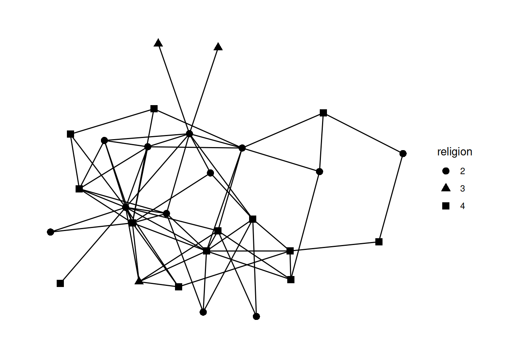
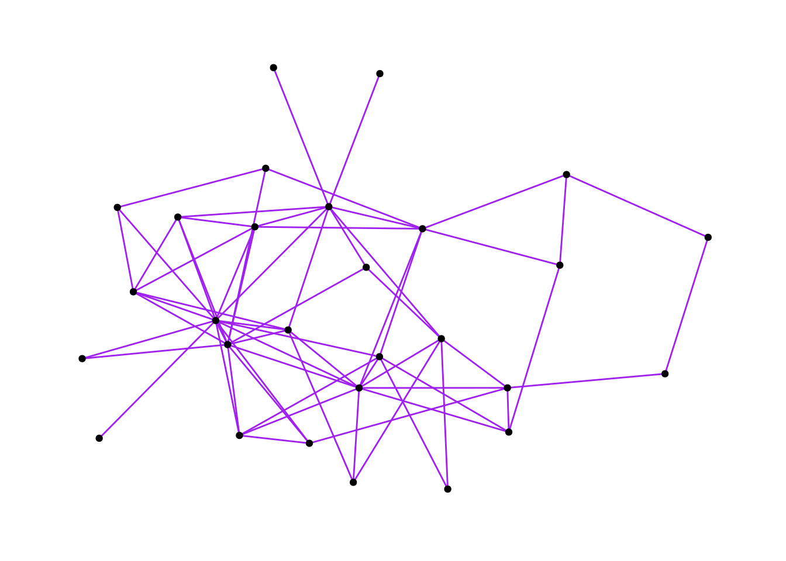
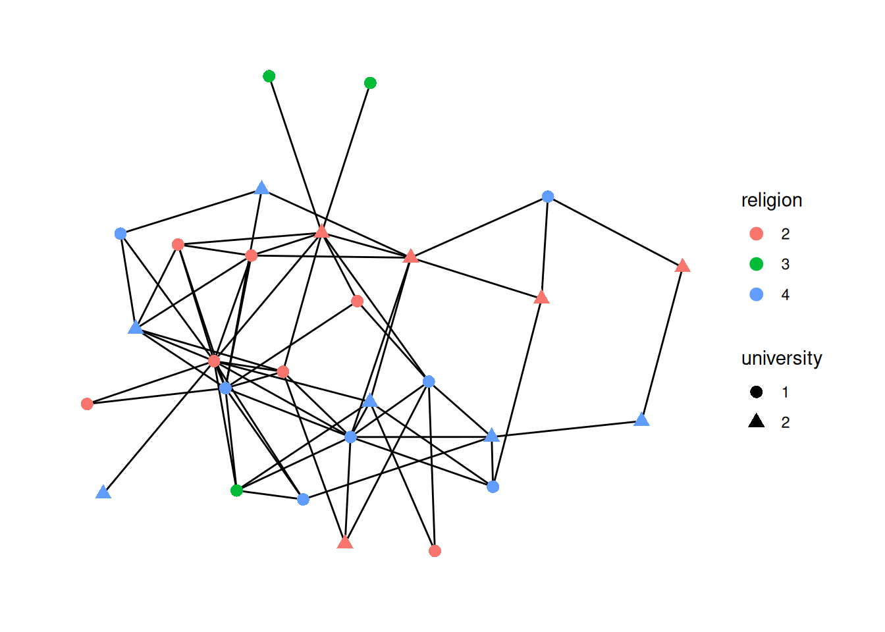
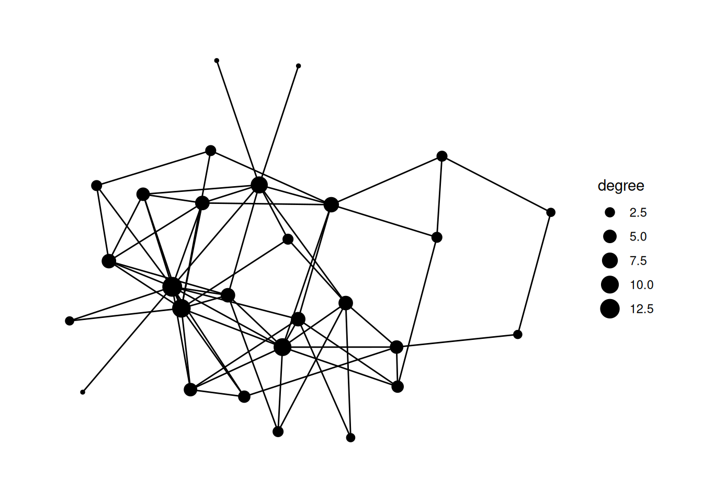
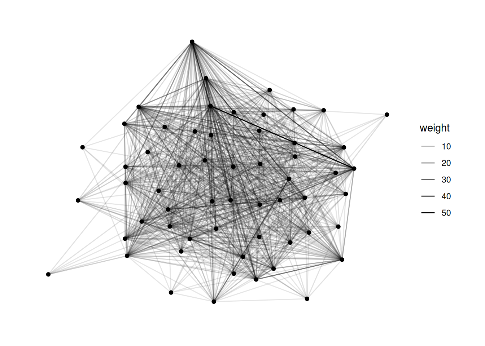
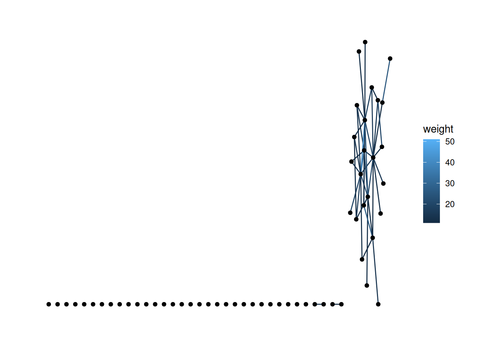
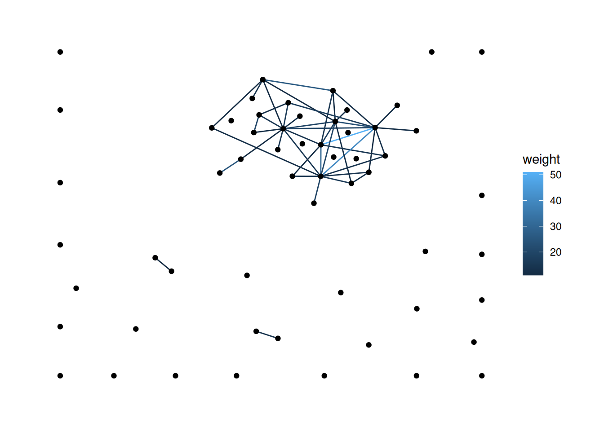
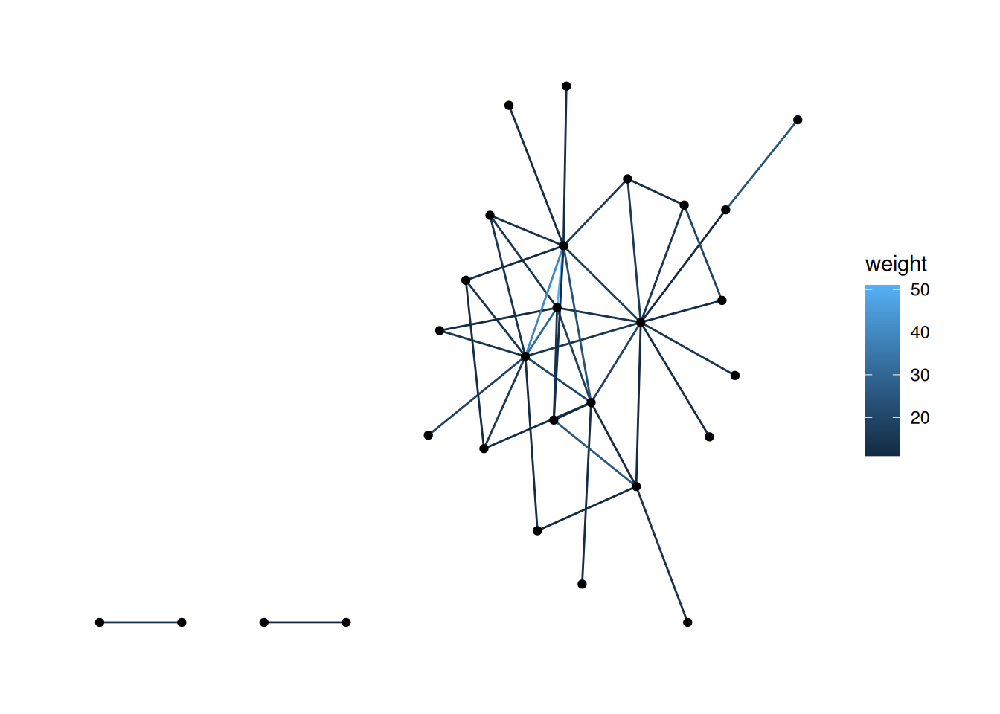

library(networkdata)
Attaching package: 'networkdata'The following object is masked from 'package:dplyr':
starwarsG <- ffe_friends |> as_tbl_graph()There are two main types of “aesthetics” in ggraph: changes that apply to all of the nodes/edges, and changes that differ based on some attribute of the nodes/edges.
For this tutorial, we’ll be visualizing data from a 1990 paper on the French financial elite (ffe) in the networkdata package.
Let’s load the data as a tbl_graph
Attaching package: 'networkdata'The following object is masked from 'package:dplyr':
starwarsNow, let’s see what it looks like it our basic ggraph plot.
We’ve already learned about the first kind of aesthetics—general aesthetics that apply to the whole graph. Things like changing the size of the nodes or the color of the edges.
For example, this changes the shape of the nodes to triangles and makes them a bit bigger.
The second type of aesthetics “maps” some aspect of the data to some aspect of the visualization. For example, we might color nodes differently based on their major or size them differently based on their centrality.
Let’s start by figuring out what the attributes of the nodes are in this data.
# A tbl_graph: 28 nodes and 66 edges
#
# An undirected simple graph with 1 component
#
# Node Data: 28 × 26 (active)
birthdate birthplace cabinet clubs eliteprom elitevote ena enayear
<dbl> <dbl> <dbl> <dbl> <dbl> <dbl> <dbl> <dbl>
1 1943 2 1 2 1 24 1 1970
2 1935 2 2 3 1 52 2 NA
3 1924 1 2 1 1 45 2 NA
4 1933 2 2 0 1 28 1 1960
5 1931 1 1 3 1 45 1 1957
6 1934 2 1 3 0 6 1 1962
7 1932 1 2 1 1 48 2 NA
8 1931 1 2 3 1 34 2 NA
9 1911 2 2 0 0 13 2 NA
10 1935 1 2 3 1 23 2 NA
# ℹ 18 more rows
# ℹ 18 more variables: fathers.lev <dbl>, finance.min <dbl>, igyear <dbl>,
# inspec.gen <dbl>, masons <dbl>, na <lgl>, normal.sch <dbl>, party <dbl>,
# polytech <dbl>, polyyear <dbl>, prestige <dbl>, religion <dbl>,
# sciencepoly <dbl>, socialreg <dbl>, topboards <dbl>, university <dbl>,
# vertex.names <chr>, zipcode <dbl>
#
# Edge Data: 66 × 2
from to
<int> <int>
1 2 6
2 3 6
3 1 7
# ℹ 63 more rowsThis is rich data! There are 26 different variables, some of which are clear (e.g, birthdate) and some of which are confusing (e.g., topboards or igyear). Let’s choose one and visualize it.
Usually, you would want to be guided by a question about the data which would inform your visualizations. As our question, let’s look into whether people form friendships across religions. Let’s visualize different religions as different shapes.
To do that, we “map” the shape of the nodes to the religion variable. The syntax to do this is aesthetic=column name. So, to change the shape based on the data in the religion column, it’s shape = religion. We put that whole thing in aes (which stands for mapping aesthetic), and put it into the geom_node_point function.
The key idea here is that things outside of aes() apply to all nodes or all edges, while things inside of aes() apply to nodes or edges differently based on some attribute of the data.
G |>
mutate(religion = as_factor(religion)) |>
ggraph() +
geom_edge_fan() +
geom_node_point(aes(shape=religion), size = 3)Using "stress" as default layout
Note the line mutate(religion = as_factor(religion)) Try commenting out that line and running the code again.
You should get an error that is something like A continuous variable can not be mapped to shape. This is saying that in this data religion is a number and it doesn’t make much sense to map a number to a shape, because usually numbers are ordered while shapes are unordered. So, we have to add the mutate step to change the religion variable type using as_factor which changes how R sees it from a number to a factor—in other words, a category (which is what religion really is, anyway!).
We can also map the edge aesthetics to variables from our edgelist spreadsheet. The most common approaches are to map the type of the edge to color and the weight of the edge to the width, color, or alpha of the edge.
Looking at our data, the edges don’t have weights, so let’s load in a dataset that does. The code below loads the fourth network from the animal_13 data—edges represent how long ants spent near each other—and colors the edges based on their weight.
G graph and change the width of the edges to .5 and their color to purple.Using "stress" as default layout
religion, and the shape to university. (Hint: as_factor)Using "stress" as default layout
mutate and figure out how to calculate the degree centrality for our network; save the centrality in a column called degree and change the size of nodes based on the degree.Using "stress" as default layout
bkfrab dataset (also from networkdata, so load it in the same way as the ffe_friends data above). This records how often pairs of subjects were seen talking to each other in a fraternity. Map the alpha of the edge to the weight in the edges dataframe.Hint: Remember to use as_tbl_graph to change the network type.
Using "stress" as default layout
bkfrab data, there are a lot of nodes with edge weight 10. Filter to just the edges whose weight is greater than 10, and map the color of the edges to their weight.Using "stress" as default layout
'stress' layout puts them along the bottom, which looks kind of odd. There are a few ways to handle this. First, try changing the layout.You probably want a layout from here. This isn’t well documented anywhere, but you just use the end of the name of the layout function. For functions with two names, you just use the initials. For example, to use igraph_layout_davidson_harel, you would use ggraph(layout='dh').
Note: I chose one of the layouts that I thought would look good, but yours will likely look different.

There are a few ways to do this, but one approach is to filter out the nodes with degree of 0. See if you can figure out how to do that.
Using "stress" as default layout
You now have all of the key skills to load in, mutate and filter networks, and to do some pretty cool visualizations with them. From here on out, we’ll mostly be reusing these skills in new ways.